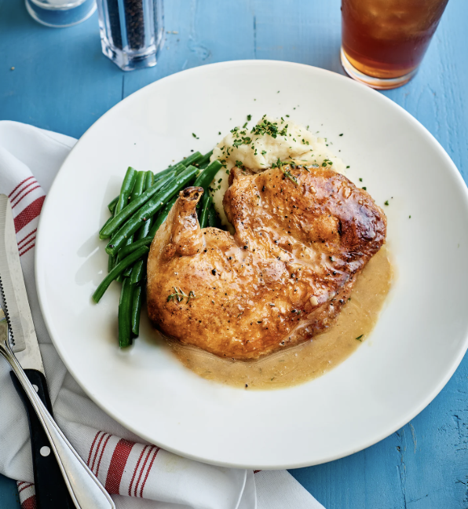

Brick Chicken

Description
This ain't your grandma's chicken. Think of this as
a poor man's version of Thanksgiving fried Turkey --
perfectly cooked crispy skin, and juicy succulent inside.
Ingredients
- Skin on, bone in chicken cutlet
(or half chicken if you desire)
- 1 lemon and a zester
- 1 tbsp of rosemary
- 1 tbsp of sage
- 4 tbsp of minced garlic
- 1/2 cup of extra virgin olive oil
- 1 tsp of red pepper flakes
- 1 clay brick wrapped with tin foil
- 2 tbsp of butter
Steps
- Preheat oven to 475F
- Put all ingredients (except brick and butter)
in a large bowl, and increase entropy
- Place chicken in bowl and let it marinate for
30 minutes while the oven heats
- Melt butter in a frying pan -- add some marinade
for extra flavor
- Place chicken face down in the hot pan, cover
with tin-foil wrapped brick
- Let the skin get crispy for 4 minutes in the pan
- Remove from pan, and place in oven until internal
temp reaches 150F (about 30 min)
- Once cooked, remove chicken from oven, let it rest
for 5 minutes, and then serve
- For extra taste, cover chicken with the melted butter
marinade from frying pan -- enjoy!
Home